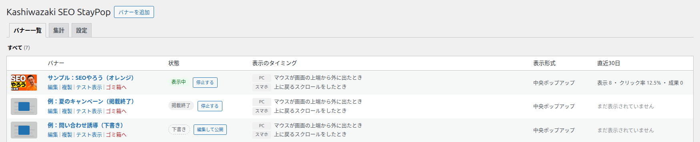

Kashiwazaki SEO StayPop マニュアル

訪問者がページから離れそうになった瞬間に、バナーやポップアップを表示して、購入・問い合わせ・登録などへの次の一歩を案内するプラグインです。いつ・どこに・だれに表示するかを細かく決められ、表示・クリック・成果の回数を集計して比べられます。
ページを読み終えた人や、タブを閉じようとした人は、そのまま帰ってしまうことがよくあります。本プラグインは、パソコンでマウスが画面の上端から外に出た瞬間や、スマホで上に戻るスクロールをした瞬間など、「離れそうな瞬間」をきっかけにバナーを表示します。ページを開いた直後や、フォームに入力している間は表示しないので、読むのをじゃましにくい作りです。バナーの内容・デザイン・表示するページ・表示する回数・対象にする訪問者は、バナーごとに設定できます。
主な機能
離脱の瞬間に表示
PC はマウスが上端から外へ、スマホは上に戻るスクロール。○秒見た・○％読んだも選べます。
細かい出し分け
表示するページ・除外ページ・回数・掲載期間・ログイン状態・流入元で絞り込めます。
集計とA/Bテスト
表示・クリック・閉じた・成果を数え、見出しやボタンの違う2つの案を比べられます。
全体の流れ
できること
| 機能 | 内容 |
|---|---|
| バナーを作る | 画像・見出し・説明文・ボタン・小さなリンクを組み合わせたバナーを、いくつでも作れます。よく使う文言のテンプレート（クーポン・資料請求など）も選べます。 |
| 見た目を決める | 中央ポップアップ・下部バナー・隅からのスライド表示の3つから選び、幅・色・角の丸み・余白・文字の大きさを調整できます。編集中はプレビューで確かめられます。 |
| 表示のタイミングを決める | マウスが上端から外に出たとき（PC）、上に戻るスクロールをしたとき（スマホ）、○秒見たとき、○％までスクロールしたときから選べます。 |
| 表示するページを決める | サイト全体、または URL・投稿・固定ページ・カテゴリーで指定したページだけに表示し、購入完了ページなどは除外できます。 |
| 回数と期間を決める | 1回の訪問につき1回まで・1日1回まで・最初の1回だけ・毎回から選べ、閉じた人には○日表示しない設定や、掲載期間を決められます。 |
| 訪問者で出し分ける | ログインしている人だけ・していない人だけ、ユーザーの権限、URL の utm_source、参照元のサイトで絞り込めます。 |
| 成果を数える | 完了ページなどを「成果ページ」に指定すると、バナーを見た人やクリックした人がそのページに来た回数を数えます。 |
| A/Bテスト | 見出し・ボタンの文言・画像が違う2つのパターンを、決めた割合で出し分けて結果を比べられます。 |
| テスト表示 | 保存したバナーを、サイトのトップページで実際に出して試せます。あと何をすれば表示されるかが画面に出ます。 |
| 移行・バックアップ | すべてのバナーと設定をファイルに書き出し、別のサイトで読み込めます。 |
表示されるのは公開ページだけです。 管理画面にはバナーは出ません。このプラグインのファイルは、バナーを表示する候補があるページと、成果を数えるページだけで読み込まれます。
画面の地図
管理画面の左メニュー「Kashiwazaki SEO StayPop」を開くと、3つのタブの画面が表示されます。バナーの作成と編集は、専用の編集画面で行います。
| 画面 | できること | 使える人 |
|---|---|---|
| バナー一覧 | バナーの一覧・状態の確認・表示と停止の切り替え・複製・テスト表示・ゴミ箱 | 投稿を書ける権限のある人 |
| 編集画面 | バナーの内容・デザイン・タイミング・ページ・回数・出し分け・成果の設定とプレビュー | 投稿を書ける権限のある人 |
| 集計 | バナー別・パターン別・端末別・ページ別の回数と割合、ログの削除 | 管理者 |
| 設定 | 計測のオン・オフ、訪問者の同意、ログを残す期間、書き出しと読み込み | 管理者 |

SEO / GEO における強み
本プラグインは検索順位を上げるための機能ではありません。ただし、ページの評価や読みやすさを損なわないように、次の点に配慮しています。
SEO の観点
- ページの読み込みを重くしにくい: バナーを表示する候補があるページと、成果を数えるページだけで、スクリプト（約41KB）とスタイル（約7KB）を読み込みます。それ以外のページでは何も読み込みません。
- 開いた直後に画面をふさがない: 「開いてから○秒は表示しない」設定と、「離れそうな瞬間」に表示する仕組みにより、ページを開いてすぐ本文を隠す表示を避けやすくなっています。下部バナーと隅からのスライド表示は、本文を覆わずに読み続けられる形式です。
- 本文を書き換えない: バナーはきっかけが起きたときに画面へ追加されるもので、ページの本文そのものは変わりません。
GEO（生成 AI の検索）の観点
- 本文の文章を乱さない: バナーの見出しや説明文は本文の中に書き込まれないため、検索エンジンや生成 AI が読み取るページの本文に、宣伝の文言が混ざりにくい作りです。
画面の大部分をふさぐポップアップは、訪問者の使い勝手を下げることがあります。検索エンジンの評価への影響は、各検索エンジンの判断によります。中央ポップアップを使う場合は、表示する回数を控えめにし、閉じたあと数日は表示しない設定をおすすめします。
目次
| ページ | 内容 |
|---|---|
| インストール・初期設定 | インストールから最初のバナーを公開するまで |
| バナー一覧 | 一覧の見方と、表示・停止・複製・ゴミ箱の操作 |
| 編集画面の見方 | 編集画面の構成、プレビュー、保存と公開 |
| 内容タブ | テンプレート・画像・見出し・説明文・ボタン・サブリンク |
| デザインタブ | 表示形式・隅の位置・幅・色・角の丸み・余白・文字の大きさ・背景の暗さ |
| 表示のタイミングタブ | 表示のきっかけと、表示しない場面 |
| 表示するページタブ | 表示するページと表示しないページの指定 |
| 回数・期間タブ | 表示する回数・閉じたあとの日数・掲載期間・優先度 |
| 出し分けタブ | ログイン・権限・流入元・参照元で訪問者を絞る |
| 成果・A/Bテストタブ | 成果ページの指定とA/Bテスト |
| サイトでテスト表示 | 保存したバナーをサイトで試す方法 |
| サイトでの表示 | 訪問者から見た表示と閉じ方 |
| 集計タブ | 集計の見方とログの削除 |
| 設定タブ | 計測・同意・ログの期間・書き出しと読み込み |
| 用語集 | このマニュアルで使う言葉 |
| トラブルシューティング | よくある困りごとと対処 |
動作要件
| 項目 | 要件 |
|---|---|
| WordPress | 6.0 以上 |
| PHP | 7.4 以上 |
| ブラウザ（訪問者） | 現在の主なブラウザ（Chrome・Edge・Firefox・Safari） |